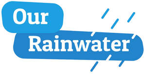
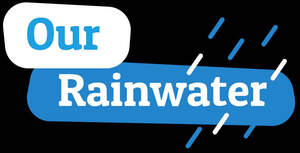

Trade Mark Journal No.2026/011 13 March 2026
UK00004347703 2 March 2026 (41,42)
Mark 1

Mark 2

- Class 41
- Development of educational materials; Publication of educational materials; Publication of educational teaching materials; Production and rental of educational and instructional materials; Dissemination of educational material; Publishing of educational material; Educational information; Educational and teaching services; Educational services; Workshops for educational purposes; Educational courses relating to design; Arranging of presentations for educational purposes; Exhibition services for educational purposes; Educational services for providing courses of education; Educational demonstrations; Production of films for educational purposes; Educational services relating to information technology; Educational services provided for teachers of children; Arranging of demonstrations for educational purposes; Arrangement of seminars for educational purposes; Educational services provided for children; Provision of educational information; Development of educational courses and examinations; Publication of educational and training guides; Conducting of educational courses in science; Organization of exhibitions for educational purposes; Lease of teaching materials; Arranging of exhibitions for educational purposes; Developing educational manuals; Providing educational demonstrations; Publication of educational texts; Arranging of displays for educational purposes; Film production for educational purposes.
- Class 42
- Hydrological research; Collection of information relating to hydrology; Design of engineering works for the prevention of inundation of land by flood water; Consultancy in the field of agricultural chemistry; Technological consultancy in the field of geology; Design of engineering works for the prevention of inundation of buildings by flood water; Geological surveying; Consultancy services relating to hydrogeology; Hydrographic surveying; Meteorological forecasting; Research in the field of ecology; Levee engineering; Water analysis; Analysis of water; Geological estimation and research; Technical consultancy in the field of environmental science; Research in the field of environmental conservation; Scientific research relating to ecology; Design of geological surveys; Consultancy services relating to geology; Topographic surveying; Biology consultancy; Technical design and planning of pipelines for gas, water and waste water; Geological research; Research (Geological -); Geological surveys; Surveys (Geological -); Geological estimations and research; Engineering surveying; Surveying [engineering]; Research in the field of climate change; Chemical services relating to mineralogy; Analysis of stream water quality; Analysis of water quality; Industrial analysis and research services in the field of chemistry; Consultancy relating to geological surveys; Topographical surveying; Technical consulting in the field of environmental engineering; Meteorological research; Engineering services in the field of environmental technology; Geotechnical investigations; Consultancy services relating to geotechnics; Consultancy services relating to geophysics; Marine, aerial and land surveying; Design of engineering works for flood prevention; Geophysical surveys; Technical design and planning of sewerage systems; Research in the field of chemistry; Geological surveys or research; Research relating to marine surveying; Providing scientific information in the fields of climate change and global warming; Technical design and planning of water purification plants; Biochemistry consultancy; Monitoring of events which influence the environment within civil engineering structures; Research and development services in the field of chemistry; Monitoring of water quality.
Our Rainwater Limited